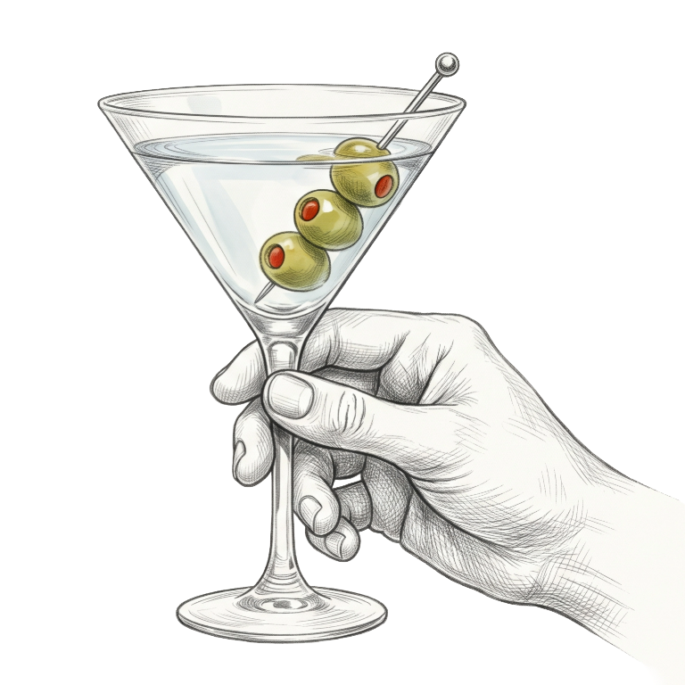

Signature Cocktails

new
Spritz Menu
Choose Your Spirit
every spritz is topped with prosecco and soda
Bitter & Bright
Herbal & Aromatic
Rich & Earthy
Spirits & Beer
Rye / Whiskey / Bourbon
Single Malt Scotch Whisky
Bottled Beer
Liquori
Tequila
Gin
Vodka
Rum